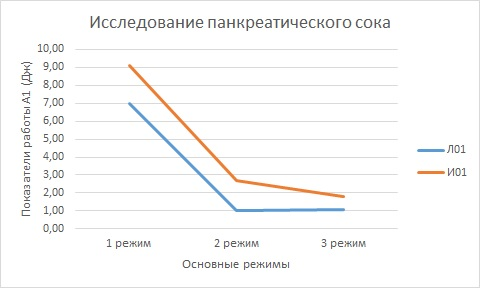

Сравнение показаний работы при разных режимах
| Внутрипротоковые кисты | |||||
|---|---|---|---|---|---|
| Пациент | Первый режим | Второй режим | Третий режим | ||
| И01 | 9.11 | 2.7 | 1.82 | ||
| И02 | 24 | 9.5 | 9.55 | ||
| И03 | 8.86 | 3.84 | 4.26 | ||
| И04 | |||||
| И05 | |||||
| Внепротоковые кисты | |||||
|---|---|---|---|---|---|
| Пациент | Первый режим | Второй режим | Третий режим | ||
| Л01 | 7 | 1.04 | 1.05 | ||
| Л02 | 5.3 | 4.2 | 4.9 | ||
| Л03 | 1.25 | 2.7 | 2.7 | ||
| Л04 | 4.11 | 2.25 | 7.8 | ||
| Л05 | 3.26 | 1.92 | 0.93 | ||
